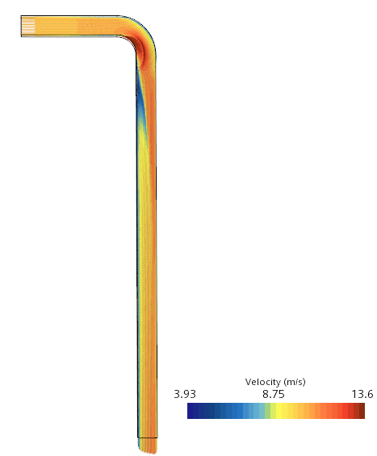
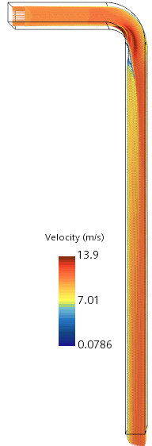
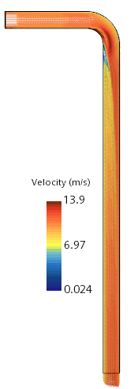

Results
1. Velocity Vector Plots Over the Midplane of the Square Duct
Velocity plot for standard k-epsilon model with high y+:
Velocity plot for Realizable k-epsilon model with all-y+:
Velocity plot for EB k-epsilon model with low-y+:
All three models predicted flow acceleration in and after the bend. However, the region of the higher velocity field differs in each case, as highlighted by the color bars representing the velocity range for these models. The velocity through the bend predicted by the standard k-epsilon model is lower compared to the other models.
2. Change in Wall Shear Stress (WSS) When Flow Passes Through the Right-Angle Bend
WSS plot for different turbulence models:

The Wall Shear Stress (WSS) plot for these cases shows that the standard k-epsilon model failed to predict flow separation. In contrast, the shift in WSS values observed in other models indicates successful prediction of flow separation as the air passes through the bend.